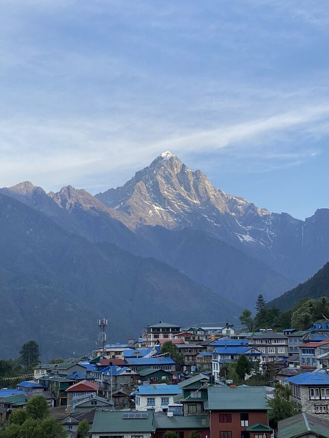
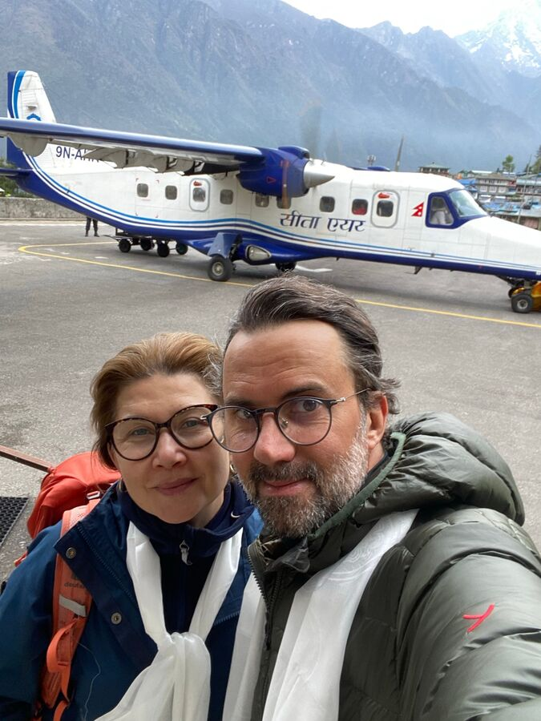
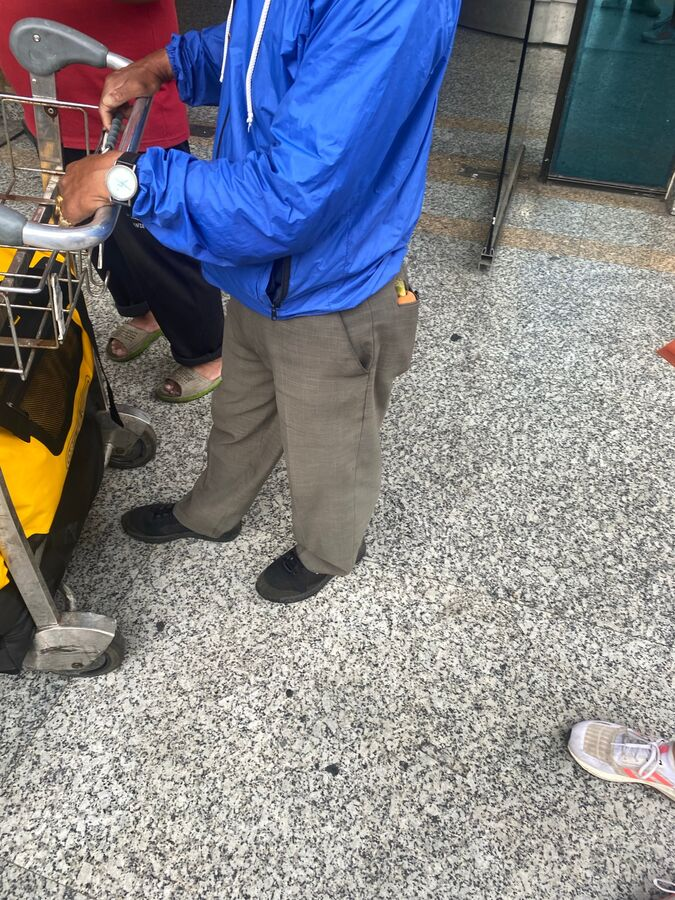
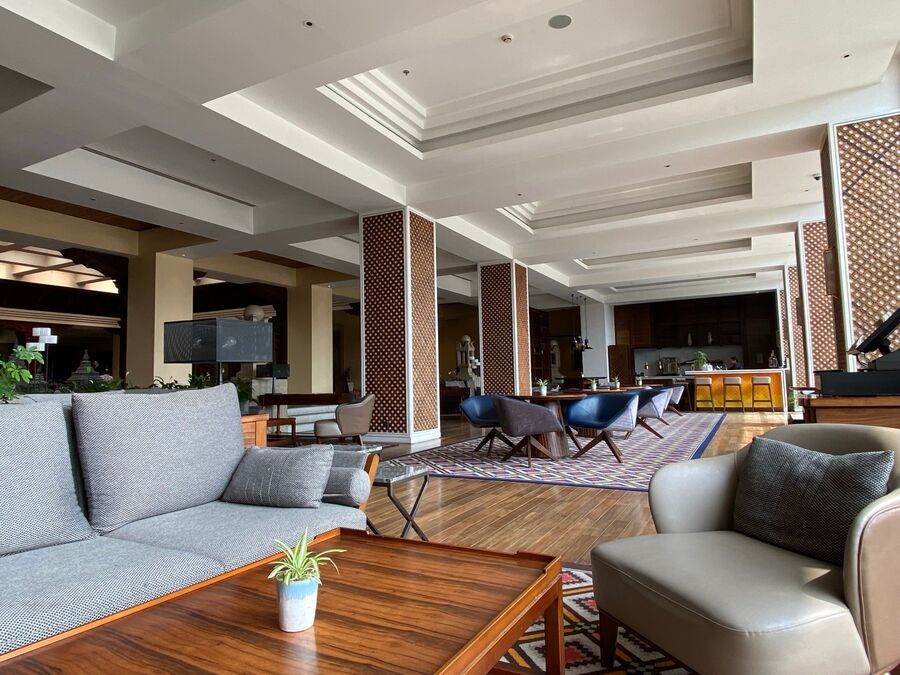
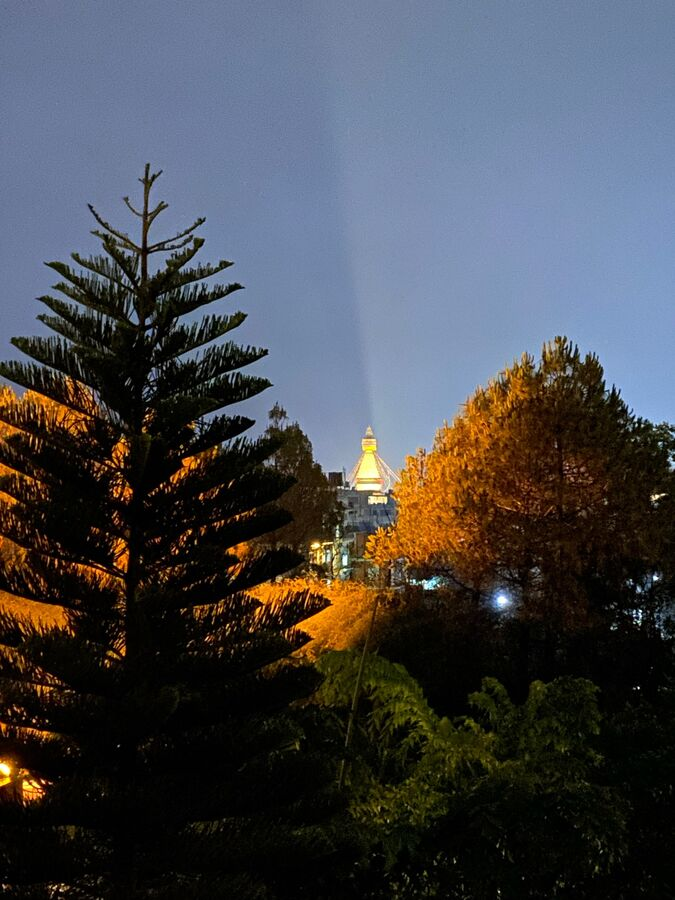

Heute war es dann soweit. Es ging zurück in die Zivilisation.
Die Nacht war nicht so kalt gewesen, aber doch sehr schlimm. Wir beide mussten sehr viel Husten und konnten kaum Schlucken. Anscheinend fing das Antibiotikum an zu wirken, denn wir haben beide gut geschwitzt.
Um 5:30 Uhr klopfte Naran an unserer Türe und holte uns ab. Wir hatten da schon unsere Taschen gepackt und uns fertig gemacht. Das erste mal ohne die schweren Trekking-Schuhe.

Im Gastraum waren schon die Teilnehmer der anderen Gruppen, die heute auch zurückfliegen sollten. Sie waren alle sehr ausgelassen beim Frühstück, wohingegen wir eher erleichtert waren, dass wir uns jetzt besser um unsere Erkältung kümmern können würden.
Wir konnten um diese Uhrzeit auch nicht viel Essen, aßen dann aber doch zumindest ein bisschen Toast, damit wir die nächste Tablette des Antibiotikums einnehmen konnten.
Dann ging es recht schnell: Alle machten sich fertig und trotteten hinüber zum von der Buddha Lodge nur wenige Meter entfernten Terminal. Naran hatte schon alle Papiere erledigt, das Gepäck wurde gewogen und wir bekamen unsere Flugtickets.
Dann ging die Verabschiedung los. Wir hatten uns in den letzten Tagen öfters über Touristen unterhalten und Naran, der eigentlich immer eher zurückhaltend war, hatte uns Einblick in seine Gedankenwelt gegeben. Von daher meine ich ableiten zu können, dass er mit uns eine gute Zeit hatte. Vor allem die Tatsache, dass wir trotz Übermüdung und starker Erkältung bis zum Schluss durchgehalten haben, hat ihn durchaus beeindruckt.
Wir hingegen haben Naran als einen sehr liebenswerten, fürsorglichen und kompetenten Menschen kennen- und schätzen gelernt. Er hat sich ständig um uns gut gekümmert, sich immer über unseren Gesundheitszustand erkundigt, uns ermahnt wenn nötig, und uns die Trekking-Tour im Rahmen des Vertretbaren zu Ende hat machen lassen. Wir hatten immer das Gefühl, dass er eingeschritten wäre, wenn es zu viel für uns gewesen wäre. Jetzt im Nachhinein muss ich sagen, dass seine Einschätzung gepasst hat. Er hat uns dazu verholfen, an vielen Stellen des Weges über uns hinauszuwachsen.
Auf jeden Fall bekamen wir beide von ihm jeweils einen weißen Seidenschal überreicht. Das ist hier so üblich und ich habe meinen von 2009 tatsächlich auch noch zu Hause. Wir umarmten uns und bedankten uns noch ein paar mal gegenseitig.

Nach der Verabschiedung gingen wir durch die Security-Kontrolle und um 6:20 Uhr ging es dann auch schon raus zu Fuß auf die Parkfläche der gerade gelandeten Flugzeuge. Dann Einsteigen, Anschnallen, Ohrstöpsel rein und los ging der Flug. Für mich auch eine Premiere, denn 2009 waren Ralf und ich ja vom Kloster Tengboche aus mit dem Helikopter direkt nach Kathmandu geflogen. Die Landebahn in Lukla endet bekanntermaßen direkt vor dem Bergmassiv, die selbe Bahn, als Startbahn, endet bei einem steilen Bergabhang. Also besser ist es, wenn spätestens dort der Pilot die Maschine in die Luft bekommt. Jedenfalls hat es wohl geklappt, denn sonst könnte ich dies nicht schreiben.

Der Flug dauerte rund 30 Minuten. Das Gepäck kam recht zügig und unser Transfer war auch schon da. Er hatte sogar unsere Tasche dabei, die wir bei Abflug nach Lukla in der Agentur gelassen hatten.
Die gesamte Situation am Flughafen war dennoch sehr skurril. Zunächst war es unheimlich voll, was uns nach 14 Tagen Ruhe in den Bergen natürlich umso mehr auffiel. Dann gab es da den Cheforganisator unserer Agentur, ein kleiner, etwas untersetzter Mann mit Mütze, der quirlig hin und herlief, telefonierte, um uns dann schließlich zu bitten, noch 20 Minuten zu warten. Jemand von der Agentur würde kommen, jedenfalls entnahm ich dies seinen fuchtelnden Bewegungen.
Neben ihm, ebenfalls klein, war der Gepäckbeauftragte. Er stand in ständiger Kommunikation mit dem Cheforganisator. Seine Aufgabe: Unser Gepäck nicht unbeaufsichtigt zu lassen, aber nicht, weil es gestohlen werden könnte, sondern weil jemand anderes von uns den Beförderungsauftrag bekommen könnte und somit das Trinkgeld vereinnahmen würde. Der Gepäckbeauftragte fiel vor allem durch je einen goldenen Ring an seinen Fingern sowie einer großen Möhre in seiner Gesäßtasche auf.

Dann ging es plötzlich doch los. Cheforganisator und Gepäckbeauftragter gaben Handzeichen und wir folgten. Es ging ein Stück weiter bis zu einem Parkplatz. Da stand dann der Chefdisponent und stoppte uns Vierertruppe erst einmal. Schnell waren fünf, sechs weitere Männer um uns. Der Disponent war ein etwa 60 Jähriger Mann, etwas flach auf der Brust, dafür ein kleines Bäuchlein, darüber ein irgendwie bunter, sehr eng anliegender Pullover mit V-Ausschnitt. Und ich meine, er hatte so eine Pumphose und Sandalen an. Er war braun gebrannt, hatte mindestens einen Ohrring und eine Farbpunkt auf der Stirn. Jedenfalls hatte er eine große Kladde in der Hand, gestikulierte herum, gab dem Cheforganisator auch mal einen kleinen Hieb mit der Kladde. Auf jeden Fall ein großes Hallo.
Ich muss ja nicht erwähnen, dass Yeşim und ich einfach nur ins Hotel wollten.
Nun ja, irgendwie löste sich diese skurrile Begebenheit auf, wir wurden durchgelassen und der Cheforganisator wehrte noch den einen oder anderen Taxifahrer ab, die sich den Auftrag dadurch sichern wollten, in dem sie zusammen mit dem Gepäckbeauftragten den Wagen schieben. Am Ende hat es dann ein Fahrer geschafft.
Die Taschen wurden ins Auto gepackt, ich gab dem Gepäckbeauftragten ein Trinkgeld und der Cheforganisator bezahlte den Taxifahrer. Dann ging es endlich los.
Ich hatte für die Tage nach unserem Trek das Hyatt Regency im Nordosten gebucht. Es ist ein 5-Sterne Hotel, wobei man natürlich immer sagen muss, dass Nepal ein Entwicklungsland ist und dementsprechend verhält es sich auch mit 5-Sterne Hotels. Das Hotel befindet sich etwas abgeschirmt in einer parkähnlichen Anlage. Dadurch ist es wirklich sehr ruhig.
Wir wurden herzlich willkommen geheißen und zur Rezeption geleitet. Dort erledigten wir die Formalien und hofften natürlich auf ein direkt zu beziehendes Zimmer. Da war es gerade 9:30 Uhr. Leider war dem nicht so. Wir sollten bis ca. 11 Uhr warten. Da wir ohnehin frühstücken wollten, war uns das auch egal.
Und als wir den Frühstückssaal betraten, war unsere Freude riesengroß. Frische Säfte, Obst, Salat, Croissants, Gebäck. Natürlich auch warme, meist indische Küche. Das freundliche Angebot, uns Eier zu machen, haben wir dankend abgelegt, denn wir hatten 14 Tage lang immer Eier gefrühstückt
Wir saßen also da beim Frühstück in einem 5-Sterne Hotel, was für uns jetzt zugegebenermaßen nichts Neues ist, und freuten uns wie kleine Kinder über Wassermelonensaft und Karotten. Und wir lachten vor Freude. Das war das schönste Frühstück seit sehr langer Zeit.

Nach dem Frühstück tranken wir noch Kaffee im Lobbybereich und bekamen dann endlich das Zimmer. Allerdings nicht das Gewünschte, das bekommen wir dann wohl morgen. Wie auch immer, wir wollten nur noch in irgendein Zimmer.
Das Zimmer ist toll. Jedes Zimmer wäre toll gewesen. Es ist warm. Es gibt fliesend warmes Wasser. Es gibt Strom. Es gibt Klopapier, das man ins Klo werfen darf und nicht in einen Eimer neben dem Klo. Ach ja, es gibt auch ein Klo. Und ein Bett. Ein riesiges Bett. Wir haben uns so richtig gefreut.
Den ganzen restlichen Tag sind wir im Zimmer geblieben. Haben Essen bestellt, geschlafen und einen der 500 Bollywood-Kanäle geschaut.
Und jetzt ist es schon nach 3 Uhr und sollte auch schlafen. Gute Nacht!
